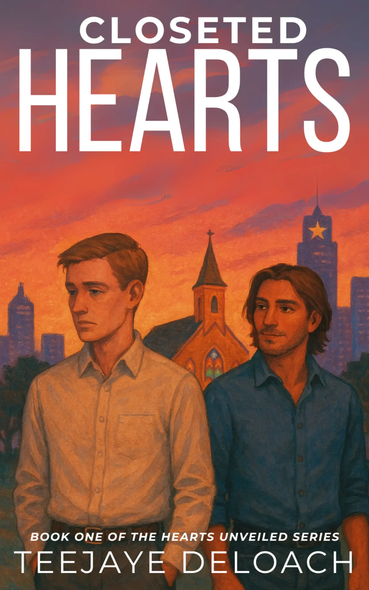

Closeted Hearts
Available nowLove, faith, and the courage to be seen.
Explore the book →
Two men who work at a church navigate hidden love and the tension between faith, identity, and belonging. Closeted Hearts explores being seen, being known, and discovering what can happen when the truest parts of yourself no longer have to remain hidden.
Evan and Alex’s story begins in Closeted Hearts.
Read the author’s story notes →A playlist has not been published here yet. Check the Writing Desk for future updates.
A complete content note list has not been added yet. Contact TeeJaye with questions before reading.
Reader praise will be added here when available.
Hidden love, honest questions, and the courage to choose a life that fits. Begin with Closeted Hearts.
Love, faith, and the courage to be seen.
Explore the book →The next chapter in love, identity, and healing.
Preview the story →The planned third book in Hearts Unveiled.
Preview the story →